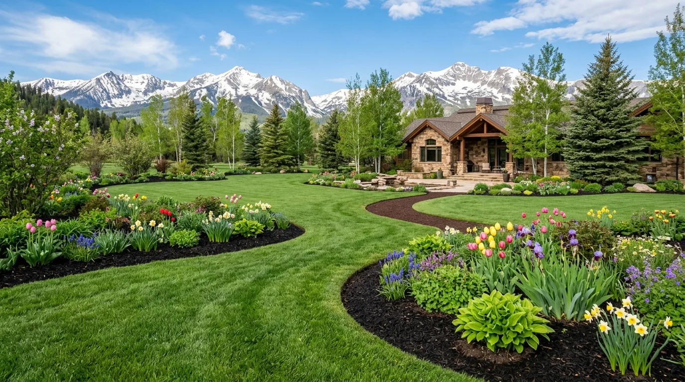

Mowing programs
Weekly or biweekly mowing with trimming, edging, and cleanup for a consistently cared-for property.
Groundwork Outdoor Co. maintains lawns around the hardscaping and fencing we build, with practical mowing, seasonal care, and cleanup plans for Longmont properties.

We tailor maintenance around the lawn, property use, irrigation, sun exposure, and the season. The goal is healthy, usable turf that complements the rest of the landscape.
Weekly or biweekly mowing with trimming, edging, and cleanup for a consistently cared-for property.
Aeration, overseeding, fertilization, and preparation for the growing season.
Leaves, overgrowth, debris, and neglected beds cleared so the property starts the season well.
Tell us about your property and we’ll help you choose a maintenance plan.
Start your project